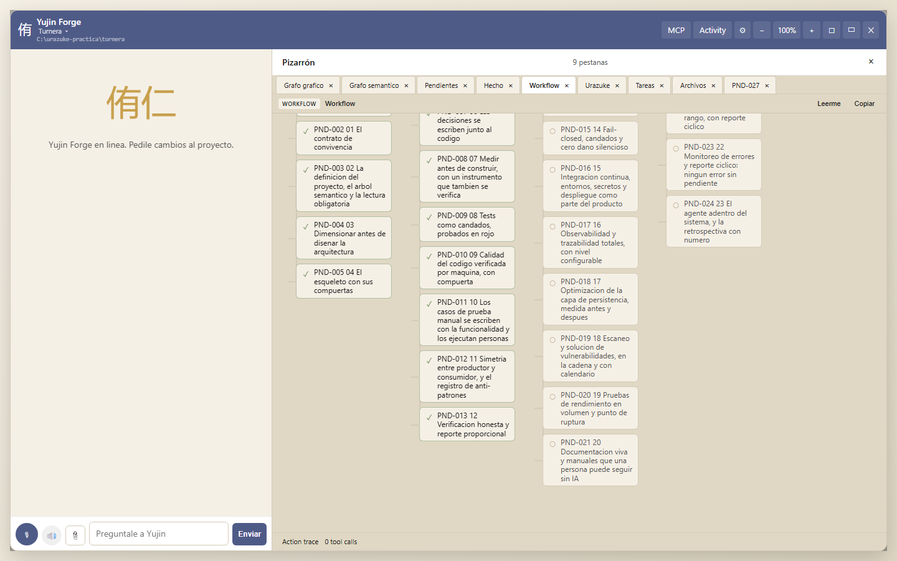
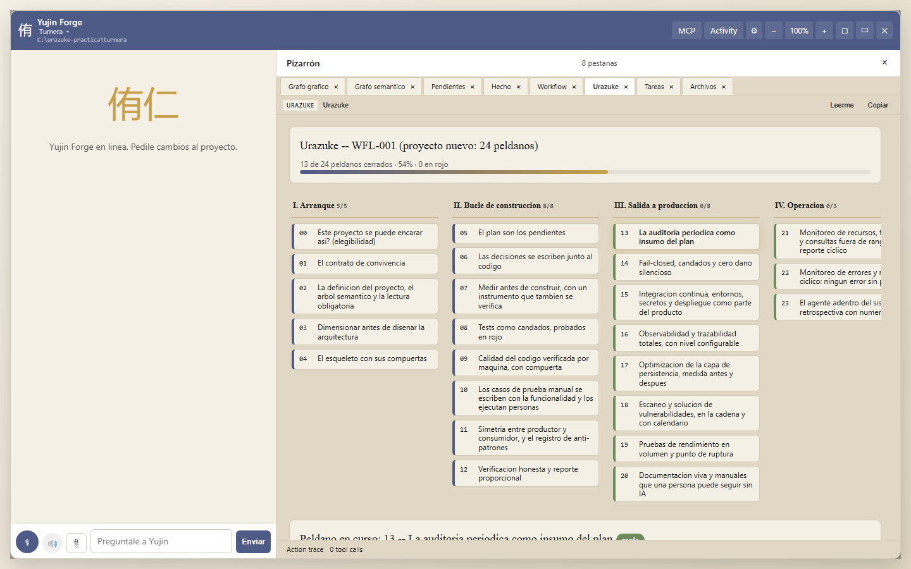
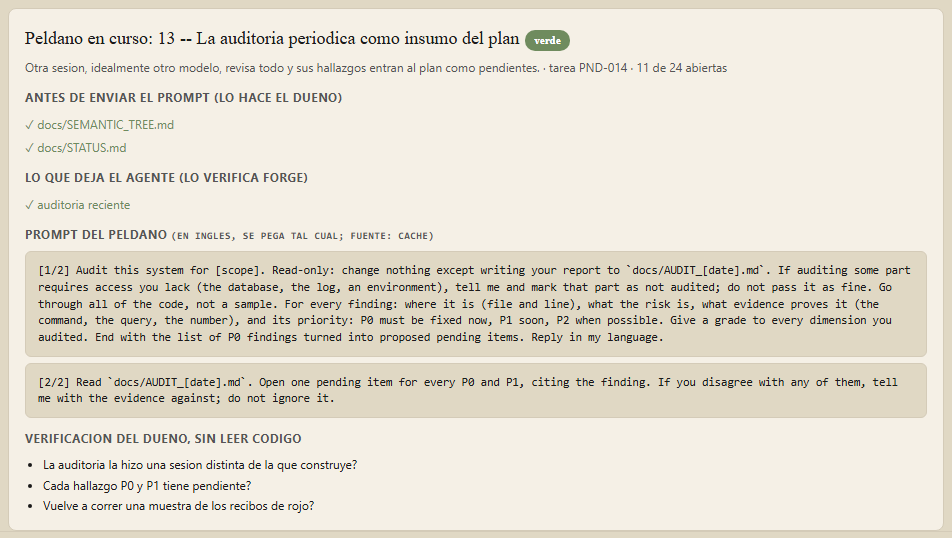
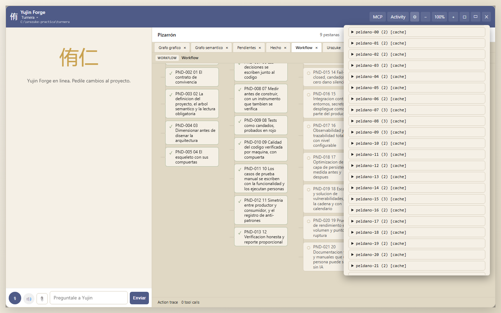
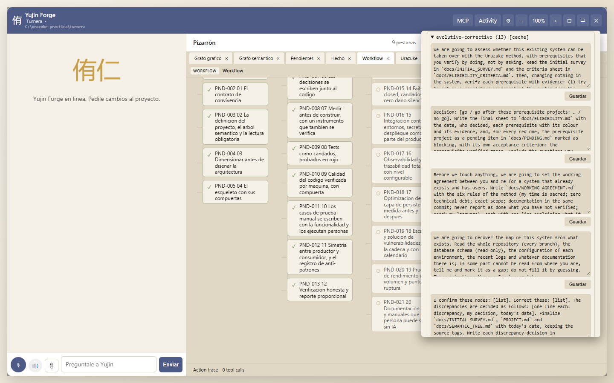
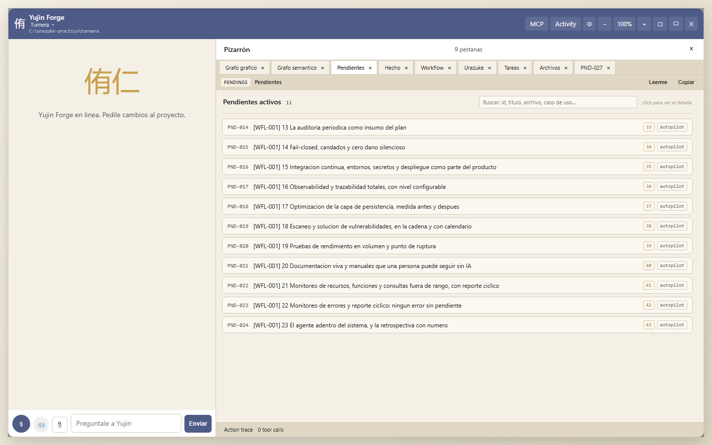
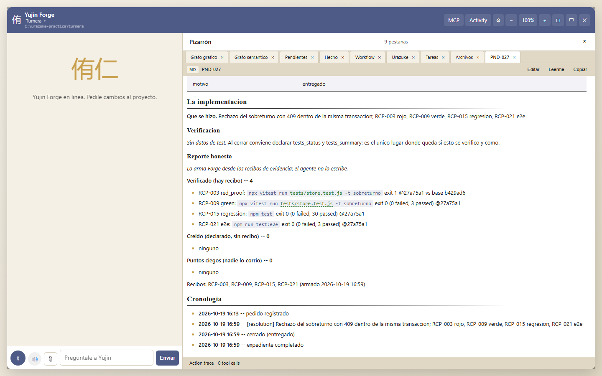
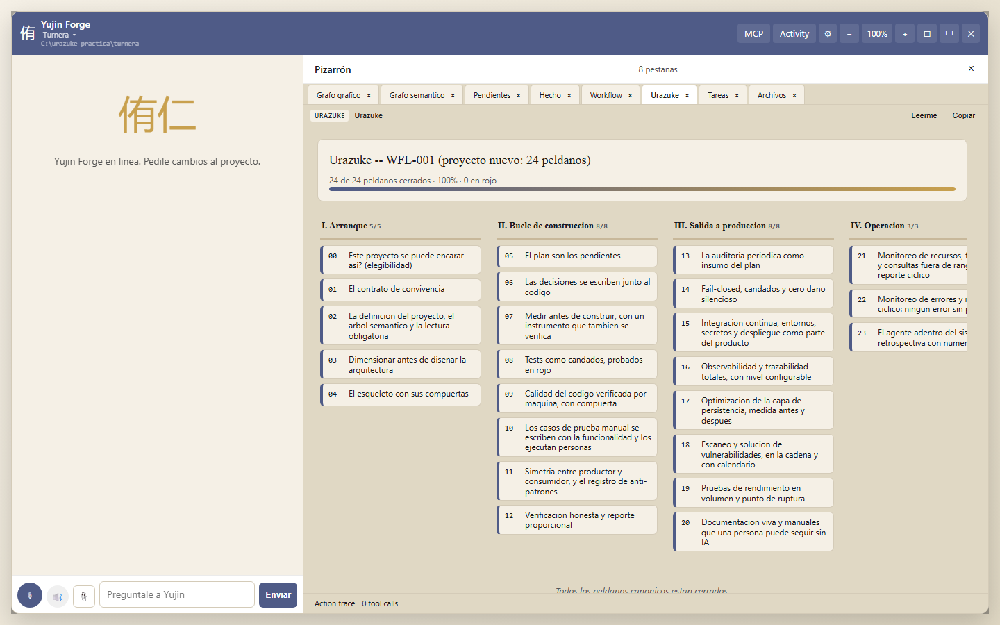

Paso a paso para principiantes, con capturas. Lo que acá se cuenta no es un ejemplo inventado: es lo que pasó el 19 de octubre de 2026 al construir Turnera, una agenda de turnos para un consultorio, desde el peldaño 0 hasta el 23, con Forge haciendo cumplir cada compuerta. Los números, los recibos y los tropiezos son los reales; la evidencia está publicada en docs/practica/evidencia/turnera/ en el repositorio del método.
Si nunca leíste el método, empezá por la escalera o al menos por su glosario. Acá se dan por sabidas tres palabras: peldaño (cada uno de los 24 pasos), compuerta (lo que Forge verifica antes de dejar cerrar un peldaño) y recibo (la salida textual de un comando, con su versión y su código de salida, que Forge guarda como prueba).
feat/urazuke-engine del repositorio yujinapp/yujin-forge; cuando se publique en npm el comando de instalación será npm install -g @nac3/forge-cli. Verificá con yf --version.Una aclaración honesta antes de empezar: en esta práctica el rol de "dueña del consultorio" lo hizo la misma persona que opera Forge. En un proyecto real la dueña no lee código y decide; el agente propone y construye. Vas a ver las dos voces.
Forge no te pide abrir una terminal ni hacer cd. El comando yf start (o el ícono del escritorio que crea yf start --shortcut) abre una ventana nativa con dos botones: proyecto existente o proyecto nuevo. Si elegís nuevo, te pide el nombre y la carpeta donde crearlo con el explorador de archivos de tu sistema; si elegís existente, te deja elegir la carpeta. Después registra el proyecto, decide qué camino del método le toca y abre el panel en el navegador.
Para Turnera, el arranque fue:
yf start --new turnera --parent C:\urazuke-practicaEso creó C:\urazuke-practica\turnera con un git init, un primer commit ("Arranque del proyecto con Yujin Forge (Urazuke, peldaño 0)") y el flujo WFL-001 (urazuke): los 24 peldaños como tareas del proyecto, en orden, una por peldaño.
Qué camino elige Forge, y por qué importa:
| La carpeta | Camino |
|---|---|
| no tiene código | urazuke (proyecto nuevo, 24 peldaños) |
tiene código pero no tiene docs/WORKING_AGREEMENT.md, docs/SEMANTIC_TREE.md y docs/GATES.md | urazuke-legacy (N0 a N7 y después entra en el peldaño 5) |
| tiene código y los tres documentos | evolutivo (ya se construyó con el método) |
El manual del segundo caso es este otro.
A la izquierda, el chat con el cerebro ("Preguntale a Yujin"). A la derecha, el Pizarrón, con pestañas. Las que vas a usar todo el tiempo:

Si no ves las pestañas, abrí los ajustes y activá "pestañas de arranque"; en esta práctica estaban apagadas y el Pizarrón decía "0 pestañas" hasta que las activamos.

La escalera muestra los cuatro tramos (arranque, bucle de construcción, salida a producción, operación), cuántos peldaños están cerrados y cuántos en rojo. Abajo, el peldaño en curso:

Cada peldaño en curso tiene cuatro partes, y son las mismas en los 24:
yujin.app/urazuke/api/prompts.json), se guarda en caché un día y, si lo editaste en los ajustes, se usa tu versión. Además, Forge lo inyecta solo en el contexto del cerebro: cuando le escribís al chat, el cerebro ya sabe en qué peldaño está y qué le pide el método. Pegarlo a mano es opcional; sirve para dirigir la conversación.Los prompts de cada peldaño llegan a Forge desde el repositorio del método, por la API pública yujin.app/urazuke/api/prompts.json (se guardan en caché un día; si no hay red, se usa la copia que viene con Forge). Pero vos tenés el control: en los ajustes (⚙) hay una sección Prompts de Urazuke donde cada peldaño muestra sus prompts y un botón Guardar por cada uno.


Un prompt editado se guarda en .forge/urazuke-prompts.json dentro del proyecto y gana sobre el publicado; Restablecer vuelve al original. Desde la línea de comandos: yf urazuke prompts list | show 8 | set 8 1 --file mi_prompt.txt | reset 8.
Todo lo del panel existe también como comando. Los que se usan en este manual:
yf urazuke status # la escalera en texto
yf urazuke step 8 # el detalle de un peldaño
yf pending add "título" ... # un pendiente del plan, con su especificación
yf pending close PND-025 ... # cerrar un pendiente (pasa por la compuerta)
yf urazuke evidence run <tipo> # correr un comando y guardar el recibo
yf urazuke quality init | check # la calidad por máquina
yf urazuke cycle # el reporte cíclico
yf urazuke retro # la retrospectiva con númerosAgregá --project turnera si no estás parado en la carpeta del proyecto.
La dueña escribe lo que quiere, con sus palabras, en docs/INITIAL_SURVEY.md y docs/MY_PREFERENCES.md. En Turnera: un consultorio con tres profesionales, cuarenta turnos por día, cinco personas usando el sistema, sin internet pública, sin WhatsApp todavía. Después pega el prompt del peldaño 0 (o le dice al chat "evaluá la elegibilidad") y el agente escribe docs/ELIGIBILITY.md con un veredicto: go, con las razones.
Forge verifica: que exista docs/ELIGIBILITY.md con contenido. Cierre:
yf pending close PND-001 --reason shipped --resolution "Elegible: ..."En el panel, el cierre lo hace el cerebro cuando le decís "cerrá el peldaño 0"; la compuerta es la misma.
El agente escribe docs/WORKING_AGREEMENT.md con las seis reglas del método, la rutina del rojo y la rutina del reporte honesto. Forge, además de la existencia del archivo, busca que esas dos rutinas estén escritas: son las que le va a exigir en los peldaños 8 y 12.
PROJECT.md, docs/SEMANTIC_TREE.md (los nodos de funcionalidad con sus identificadores: turnera.agenda, turnera.turno.alta, turnera.turno.sobreturno...) y docs/STATUS.md. El CLAUDE.md del proyecto le dice a cualquier sesión qué leer primero.
Acá pasó lo más instructivo de la práctica. La dueña contó los números (docs/VOLUME_SURVEY.md: 40 turnos por día, 250 días, 6 filas por turno contando cambios de estado y mensajes, 5 años de retención, una PC con 8 GB) y el agente propuso una persistencia: todo en memoria con escritura a un archivo JSON, un solo hilo. Es la elección más rápida de escribir y la que el método cuenta, en su referencia del post mortem, como el origen de un sistema real que se rompió.
Forge no la dejó pasar. El registro de dimensionamiento (la compuerta G9) respondió, textual:
pagination: 180000 rows at the horizon exceeds the 100000-row limit for materialising before slicing | write_concurrency: inadmissible with 5 concurrent users: the guarantee is implicit, undocumented, and nobody can see it in the code
El agente volvió con las cuatro opciones admisibles (base SQL con acceso asíncrono, paginación por clave, retención por antigüedad, transacciones explícitas), eligió SQLite embebido en Node (node:sqlite, sin dependencias) y lo dejó escrito en docs/SIZING.md y en la decisión D-003 de docs/DECISIONS.md. Todo esto antes de escribir la primera línea de código.
Para la dueña: no hace falta entender qué es "materializar antes de cortar". Alcanza con ver que la compuerta dijo que no, y que el agente explicó con palabras simples por qué la segunda opción aguanta diez veces el volumen.
El agente arma el proyecto vacío pero completo: configuración, la cadena de integración continua (.github/workflows/ci.yml), las compuertas escritas en docs/GATES.md, el registro estructurado, la pantalla vacía. Forge verifica que exista la cadena, las compuertas, el dimensionamiento, y que docs/STATUS.md diga cuál es el comando de la batería de tests.
El esqueleto se commitea solo, sin funcionalidad: es el "antes" contra el que se van a probar en rojo los tests del primer bloque.
La dueña escribe el pedido del bloque en docs/blocks/BLOCK_01_REQUEST.md con sus palabras. El agente lo convierte en pendientes con especificación: criterios de aceptación, cómo se va a verificar, qué flujo de pantalla toca. Desde la línea de comandos:
yf pending add "Rechazo del sobreturno" --category autopilot --priority 12 \
--acceptance "un segundo turno en el mismo lugar responde 409 con el nombre de quien lo tiene" \
--acceptance "la agenda sigue mostrando un solo turno en ese lugar" \
--how-verified "test de store en rojo contra el esqueleto, verde, regresion y e2e" \
--flow "alta de turno"Forge verifica: que el pedido exista y que todos los pendientes abiertos del plan tengan criterios de aceptación y modo de verificación (más de diez caracteres cada uno; un "e2e" a secas no cuenta, y en Turnera uno quedó así y el peldaño se puso en rojo hasta corregirlo).

Turnera, bloque 1: seis pendientes, PND-025 a PND-030 (agenda del día, alta en bloques de 20 minutos, rechazo del sobreturno, confirmar, cancelar sin borrar, marcar ausente).
docs/DECISIONS.md, una decisión por renglón con fecha. D-003 es la de SQLite; D-005, que los recordatorios se simulan en un archivo hasta que haya proveedor.
La hipótesis era: "la agenda del día usa el índice y su tiempo no depende del total de filas". El agente escribió un medidor que vive en el repositorio (scripts/meter-agenda.mjs), con su test (tests/meter.test.js: contra un caso conocido, contra su determinismo y contra el caso negativo sin índice), y lo corrió:
node scripts/meter-agenda.mjs --rows 180000 --fecha 2027-03-10
filas totales: 180000
filas del dia: 53 (2027-03-10)
indice usado: si [SEARCH turnos USING INDEX idx_turnos_fecha (fecha=?) ...]
tiempo p50: 0.653 ms max: 1.27 ms (20 muestras)Y dejó un presupuesto protegido por test: 20 ms para la agenda a 20.000 filas (medido 0,137; margen por cien, porque la máquina de CI es más lenta). Todo en docs/MEASUREMENTS.md, con el comando y la fecha. Forge verifica que exista un medidor (scripts/meter-* o tools/measure_*).
Un detalle que vale la pena contar: la primera versión del medidor se colgaba a 180.000 filas porque su generador de números al azar tenía un ciclo corto y nunca llenaba los lugares. El test del medidor contra un caso conocido fue el que obligó a mirarlo. Un medidor sin test habría dado un número cualquiera.
Este es el corazón del método y donde Forge más trabaja. Para cerrar un pendiente del plan con shipped, Forge exige tres recibos: el rojo probado, el verde y la regresión (el e2e se registra también y entra en el reporte). Los recibos los produce Forge, no el agente:
yf urazuke evidence run red_proof --pending PND-027 --step 8 \
--base-ref b429ad6 --test-file tests/store.test.js \
--command "npx vitest run tests/store.test.js -t sobreturno"Qué hace ese comando: crea un worktree temporal de git en la versión b429ad6 (el esqueleto, el código de antes), copia ahí el archivo de test nuevo, corre el comando y espera que falle. Guarda la salida (cola), el código de salida, la cuenta de tests fallados y la versión. Después:
yf urazuke evidence run green --pending PND-027 --step 8 --command "npx vitest run tests/store.test.js -t sobreturno"
yf urazuke evidence run regression --pending PND-027 --step 8 --command "npm test"
yf urazuke evidence run e2e --pending PND-027 --step 8 --command "npm run test:e2e"Cada uno devuelve recibo OK o recibo NOT OK, con su número (RCP-003, RCP-009...). Un "verde" que falla es NOT OK y no cuenta. Un "rojo" que no falla (porque el test ya pasaba en la versión anterior) es NOT OK y no cuenta: así se cierra la puerta al rojo inventado.
Lo que pasó en Turnera, con honestidad:
`` yf urazuke evidence run red_proof --pending PND-027 --step 8 \ --mutate mutante_sobreturno.diff --command "npx vitest run tests/store.test.js -t sobreturno" RCP-049 red_proof for PND-027 -- OK ref : 10e1473 (base 10e1473+mutant) mode : mutation -- a defect planted in the new code (diff on record, 11 lines) exit : 1 counts: 2 failed, 1 files failed, 1 passed ``
El diff planta un defecto de una línea en buscarSobreturno (compara la hora con !== en vez de ===); Forge lo aplica en un worktree temporal con el código actual, corre el test, exige que fallen tests (no alcanza con romper la carga del archivo), guarda el diff en el recibo y deja el árbol de trabajo intacto. Desde D-037, un pendiente cuyo único rojo es "el archivo no carga" no se cierra: Forge pide un rojo de comportamiento o uno por mutación.
node_modules del proyecto: el runner enlazaba la carpeta con una junction y al limpiar el worktree la atravesó. Se corrigió en Forge el mismo día, con un test que lo impide. Si alguna vez te pasa con una versión vieja: npm ci.Forge verifica, para cerrar el peldaño: que la rutina del rojo esté en el contrato y que haya recibos de rojo y de verde registrados.
yf urazuke quality init # detecta el stack, escribe eslint/stryker y el primer docs/CODE_QUALITY.md
yf urazuke quality check # mide y compara con el trinqueteForge trae medidores nativos (tamaño de archivo y de función, complejidad, duplicación) para cualquier stack, y usa el linter del proyecto si está. La primera corrida en Turnera:
9 archivos, 723 lineas, 90 funciones
max lineas/archivo 163 (limite 300) | max lineas/funcion 28 (40) | max complejidad 12 (10)
violaciones: 2 | bloques duplicados: 0Las dos violaciones (dos funciones con complejidad 11 y 12) no se arreglaron en el acto: se abrieron como pendientes (PND-031 y PND-032), como pide el método, y se cerraron con sus recibos. Un refactor no tiene rojo posible, así que se cerraron con --force-gate y la razón escrita; esa razón queda en el historial del pendiente para siempre.
El trinquete (.forge/quality-ratchet.json) solo deja mejorar: cuando el script de carga subió la complejidad de 0 a 1 violaciones, el check lo dijo ("violations rose 0 → 1") y se corrigió antes del commit.
docs/MANUAL_TESTS.md (para que los ejecute una persona), docs/PRODUCER_CONSUMER_MAP.md (quién escribe y quién lee cada estructura) y docs/GOTCHAS.md: cada vez que algo sale mal, la regla que lo evita. Turnera cerró con seis golpes anotados, tres del proyecto y tres de la herramienta.
Cuando cerrás un pendiente del plan con shipped, Forge arma el reporte honesto desde los recibos. No lo escribe el agente:

Tres bloques: verificado (hay recibo: el comando, el código de salida, la cuenta, la versión), creído (declarado sin recibo) y puntos ciegos (nadie lo corrió). Si un recibo se tomó con el árbol sucio (cambios sin commitear), el reporte lo dice: "the committed version was not what ran". En Turnera pasó con los recibos de los refactors, y quedó escrito.
Forge verifica, para cerrar el peldaño 12: que al menos un pendiente del plan se haya cerrado con reporte.
Otra sesión, idealmente otro modelo, revisa todo. En Turnera la auditoría la hizo una sesión independiente con Claude Sonnet (la constructora era Claude Fable), con el prompt del peldaño, solo lectura, y escribió docs/AUDIT_2026-10-19.md: 15 hallazgos con archivo y línea, cada uno verificado en vivo (levantó el servidor, probó rutas, corrió dos stores concurrentes peleando por el mismo lugar). Los tres altos:
docs/LOCKS.md, no existía en el código.Los 11 hallazgos altos y medios se convirtieron en pendientes (PND-039 a PND-049) con su especificación. Los tres altos se cerraron en el bloque 2 con rojo de comportamiento:
yf urazuke evidence run red_proof --pending PND-039 --step 8 --base-ref HEAD \
--test-file tests/estado-maquina.test.js --command "npx vitest run tests/estado-maquina.test.js"
recibo OK exit: 1 counts: 3 failed, 1 files failedAl implementar los candados, cuatro tests viejos fallaron porque sus datos asumían el comportamiento anterior (un teléfono "111", marcar ausente un turno futuro). Se cambiaron a la vista, en el mismo commit, y el reporte honesto lo dice. Eso también es el método: cuando una regla cambia, los tests que la contradicen se cambian a la vista, no se silencia la regla.
docs/LOCKS.md y docs/CONSEQUENTIAL_ACTIONS_SURVEY.md (qué cobra, envía, borra o corre solo, y con qué candado); la cadena con lint + tests + e2e en cada push; el registro JSON por petición con req_id que viaja también en la cabecera X-Request-Id, y LOG_LEVEL configurable.
Con el mismo medidor del peldaño 7, a 180.000 filas, sin índices y con índices:
| Camino | Antes | Después |
|---|---|---|
| Agenda del día | p50 36,0 ms | p50 0,71 ms |
| Resumen del mes | p50 47,9 ms | p50 10,1 ms |
En docs/PERSISTENCE.md, con el plan de consulta textual de cada caso. Forge verifica que el documento exista.
docs/SECURITY_2026-10-19.md: npm audit con cero vulnerabilidades (cero dependencias en producción), sin secretos en el repositorio, calendario mensual. El escaneo de secretos en la cadena quedó como pendiente (lo encontró la auditoría: el documento decía que corría y no corría).
El agente escribió scripts/load-agenda.mjs, que levanta el servidor real contra una base sembrada y dispara peticiones concurrentes. Al volumen esperado, al por diez, y subiendo la concurrencia hasta que se rompe:
node scripts/load-agenda.mjs --rows 300000 --requests 400 --breakpoint --p95-ms 200
conc | req | errores | altas | ms total | rps | p50 | p95
5 | 400 | 0 | 49 | 1101 | 363.3 | 11 | 22.71
40 | 400 | 0 | 0 | 717 | 557.9 | 70.83 | 101.33
160 | 400 | 0 | 0 | 678 | 590 | 227.99 | 400.29
punto de ruptura: concurrencia 160 (p95 400.29 ms, errores 0)Lo primero que se rompe es la latencia por saturación del único hilo de Node, no la base. Los dos recibos de tipo load quedaron registrados (yf urazuke evidence run load ...).
docs/USER_MANUAL.md (para la recepcionista), docs/MAINTENANCE_MANUAL.md (arrancar, parar, copia de seguridad, leer el registro), docs/INFRASTRUCTURE_AND_RECOVERY_MANUAL.md (qué hay y cómo se recupera desde cero en una tarde) y docs/CHANGELOG.md. Forge verifica los cuatro.
yf urazuke cycle --rows 30000 --over-days 365 --source "medidor sembrado al volumen de un año"Escribe docs/MONITORING_REPORT_<fecha>.md: revalida el dimensionamiento contra lo declarado en el peldaño 3 (en Turnera: admisible, 30.000 filas por año contra 60.000 declaradas), junta los errores de la ventana y abre un pendiente por cada error nuevo. En producción corre solo con un timer (el embed de Forge lo instala).
Y acá, otro tropiezo útil: el primer ciclo abrió seis bugs que no eran del producto: eran errores de red del propio panel de Forge mientras su servidor estaba apagado. Se rechazaron con motivo (--reason rejected) y Forge se corrigió para separar sus propios errores de los del sistema. La retrospectiva propone que el peldaño 22 lo diga explícitamente.
yf urazuke retroForge escribe docs/RETROSPECTIVE_<fecha>.md con los números que calcula de sus registros (sección 1) y deja las secciones 2 y 3 para la dueña y el agente. Los números de Turnera:
| Medida | Valor |
|---|---|
Pendientes cerrados con shipped | 12, los 12 con reporte honesto |
| Recibos: rojo probado / verde / regresión / punta a punta | 9 / 9 / 11 / 10 |
| Recibos NOT OK | 2 |
| Overrides de compuerta con razón escrita | 3 |
| Escalera | 24 de 24 cerrados |

Un detalle que también salió de esta práctica: cuando se cerró el peldaño 23, la pestaña Urazuke desapareció del panel, porque el flujo ya no estaba abierto. Se corrigió en Forge: la escalera terminada queda a la vista, y la compuerta de recibos sigue rigiendo para lo que se agregue al plan después.
La sección 3 terminó en dos propuestas concretas al método (el rojo del primer bloque por mutación; separar los errores de la herramienta de los del sistema), cada una con el incidente que la justifica. Las dos entraron al método el mismo día (decisiones D-037 y D-038, en los ocho idiomas) y al motor de Forge, junto con la tercera que dejó la práctica del proyecto heredado (D-039, la ventana de la medición) y un aviso (D-040, el auditor declarado).
Verificado (con recibo o con archivo en disco): las 24 compuertas en verde; 47 recibos; 12 reportes honestos; el rechazo de G9; la auditoría por otro modelo; 37 tests unitarios y 3 flujos de punta a punta en verde; lint y límites en cero violaciones; carga y ruptura medidas.
Creído (sin recibo): que los manuales se pueden seguir sin IA: nadie ajeno al proyecto los siguió todavía. Que el tiempo humano fue de unas dos horas: es una estimación.
Puntos ciegos: no hubo máquina del consultorio ni datos reales; los números de rendimiento son de una máquina de desarrollo; la "dueña" fue un rol de práctica.
Esto era también una prueba de punta a punta del motor, y sirvió. Seis defectos reales, corregidos el mismo día, cada uno con su test o su comando:
node_modules del proyecto al limpiar el worktree.yf pending edit no permitía corregir la especificación de un pendiente.Ninguno lo habría encontrado una batería de tests escrita desde adentro. Los encontró usar la herramienta como la usaría la dueña.
yf start --new turnera --parent C:\urazuke-practica
yf pending close PND-001 --reason shipped --resolution "..." # peldaño 0
... # 1, 2, 3 (el 3 con el registro G9)
yf pending add "..." --acceptance "..." --how-verified "..." --flow "..." # x6, peldaño 5
yf pending close PND-005 ... PND-008 # peldaños 4 a 7
yf urazuke evidence run red_proof --pending PND-025 --base-ref b429ad6 --test-file tests/server.test.js --command "npx vitest run tests/server.test.js"
yf urazuke evidence run green --pending PND-025 --command "npx vitest run tests/server.test.js"
yf urazuke evidence run regression --pending PND-025 --command "npm test"
yf urazuke evidence run e2e --pending PND-025 --command "npm run test:e2e"
# x6 pendientes
yf pending close PND-009 ... # peldaño 8
yf urazuke quality init && yf urazuke quality check # peldaño 9
yf pending add "Bajar la complejidad de ..." ... (x2) y cierre con --force-gate "..."
yf pending close PND-010 ... PND-012 # 9, 10, 11
yf pending close PND-025 ... PND-030 --reason shipped --resolution "..." # el bloque 1, con reporte honesto
yf pending close PND-013 # peldaño 12
(auditoría por otra sesión -> docs/AUDIT_2026-10-19.md) # peldaño 13
yf pending add "Auditoria 13 #..." ... (x11)
(bloque 2: red_proof --base-ref HEAD, green, regression, e2e; cierre)
yf pending close PND-014 ... PND-021 # 13 a 20
yf urazuke cycle --rows 30000 --over-days 365 --source "..." # 21 y 22
yf pending close PND-022 PND-023
yf urazuke retro # 23
yf pending close PND-024
yf urazuke status # 24 de 24La evidencia completa (recibos, pendientes con sus reportes, el estado de la escalera, la auditoría, la retrospectiva y el texto del rechazo de G9) está en docs/practica/evidencia/turnera/ del repositorio del método.